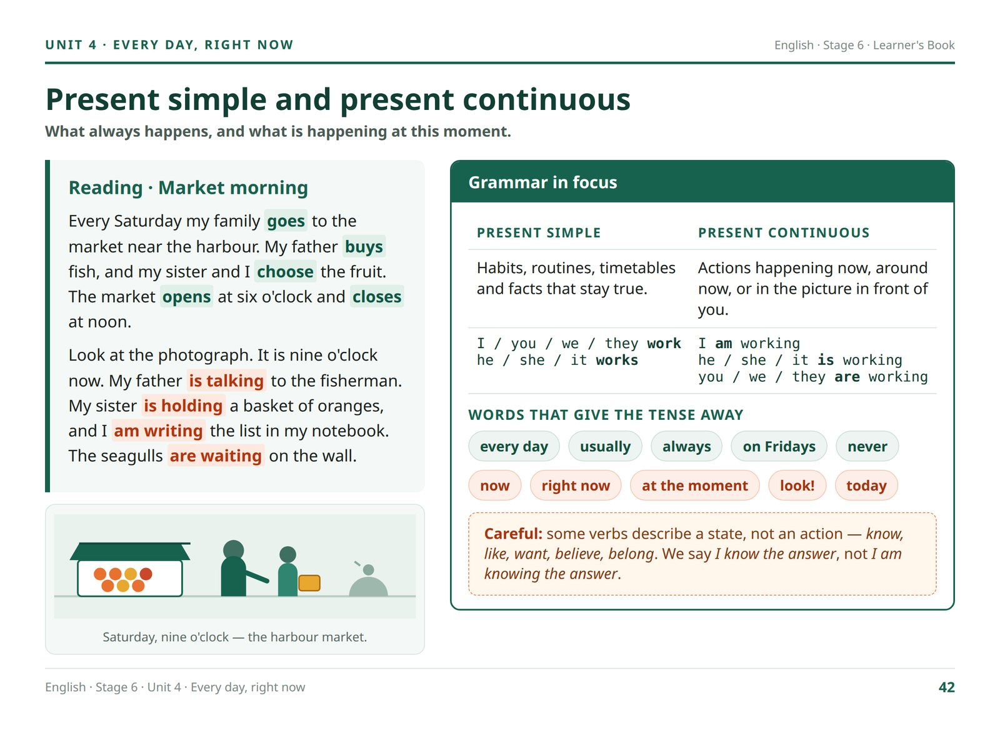
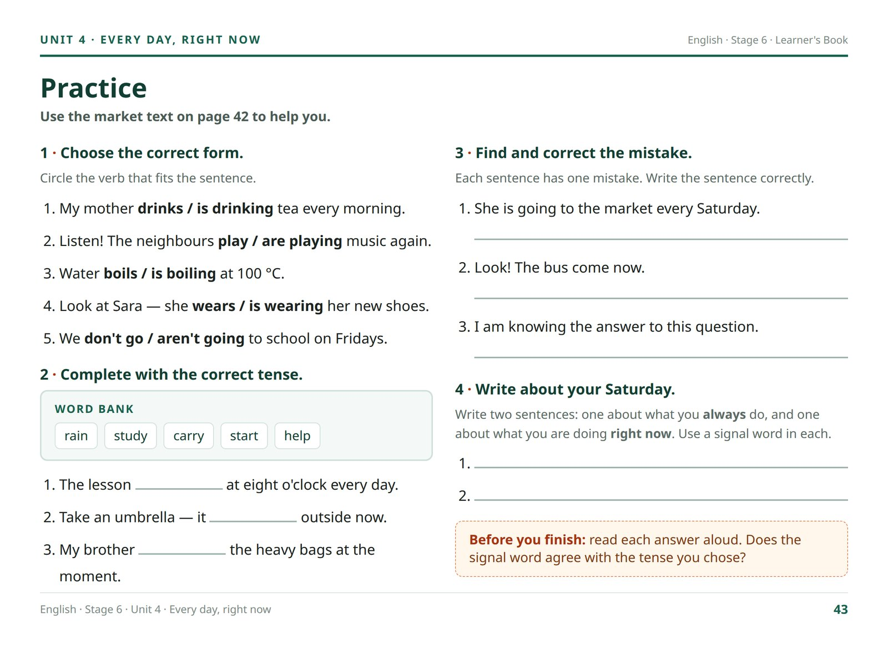
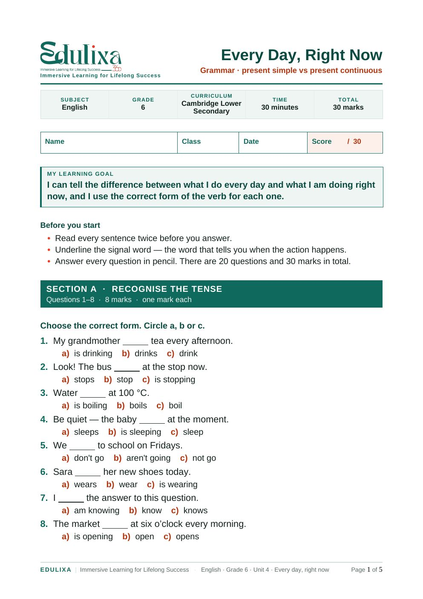
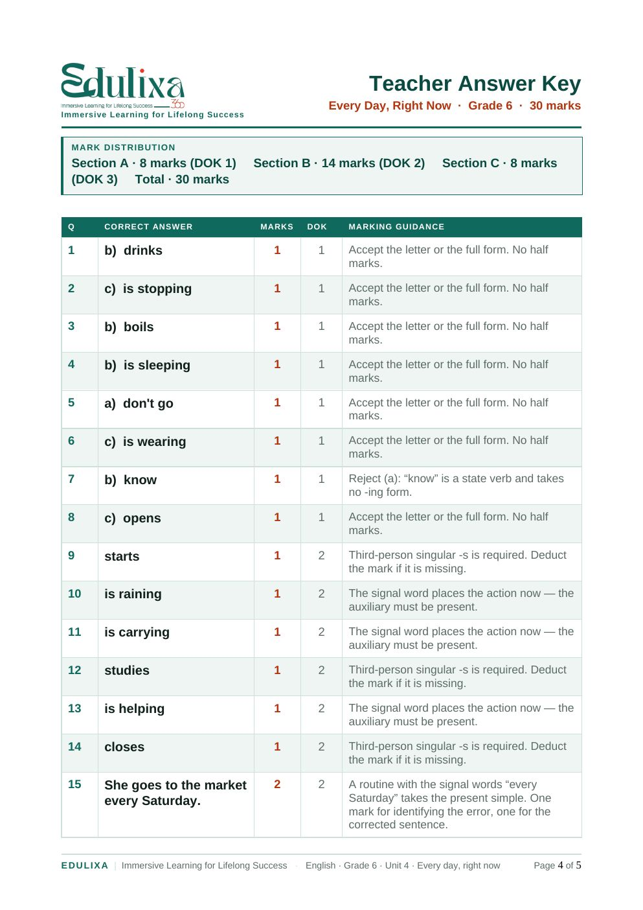
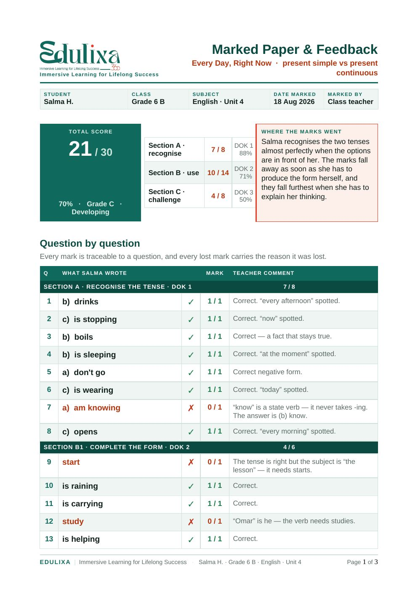
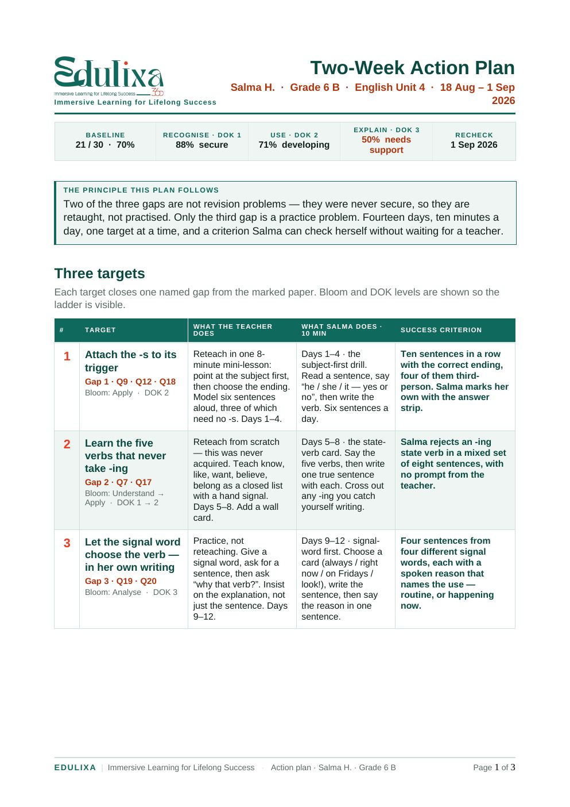
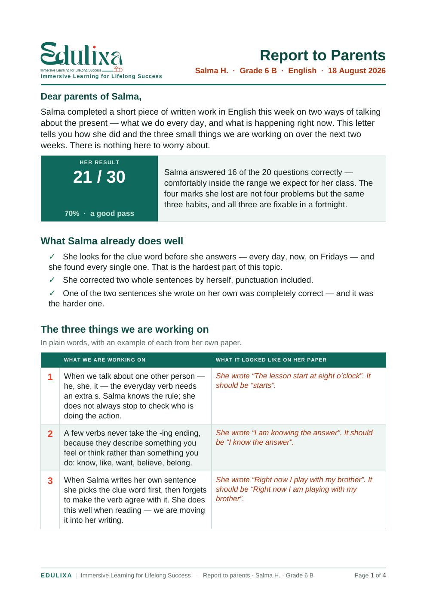
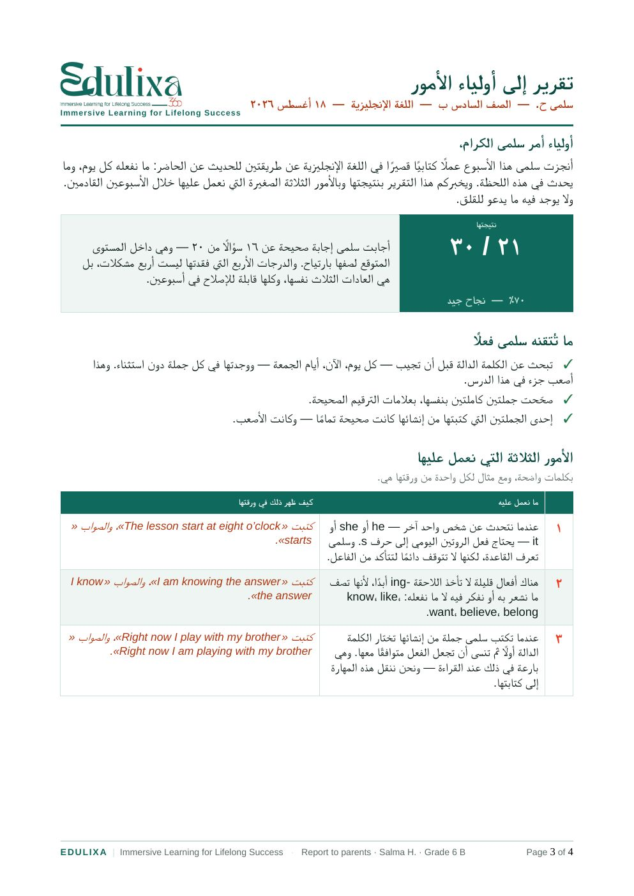

Session 4 of 5 · Main tools: ChatGPT and Google Gemini
Correct the answers. Analyse them. Then write the feedback, the action plan and the parents report.
You create one worksheet from a master prompt and the pages of your own lesson. A student answers it. Then you correct every answer against your answer key, analyse which skills the student has and which are missing, prepare the feedback, prepare a two-week action plan, and prepare the report to the parents. Four documents from one worksheet, and every one of them uses only what is written on the student’s paper.
One button. The page, the prompts, the download buttons and the pictures of the documents all switch — and the Arabic documents are true right-to-left files with Arabic-Indic numerals.
What we do in this session
Create the worksheet, correct the answers, analyse them, then prepare the feedback, the action plan and the parents report.
Session 3 created an exam. This session does the work that comes after a student has written on it. There are four jobs, and this page walks through all four with a real Grade 6 paper: correct the answers, analyse them, prepare the feedback, prepare the action plan, and prepare the parents report. Each one is a master prompt you fill in and run.
One rule runs through all four jobs: each one may use only what the job before it produced. The marks come from your answer key. The analysis comes from the marks. The feedback, the action plan and the parents report come from the analysis. Nothing may be added that the student’s paper does not show — including anything about the student’s ability, home or attitude.
The eight things you will do today
Save the master prompt as a fileOne file you attach to every worksheet, instead of pasting six thousand words into a chat box.
Personalise the red fieldsTwenty-two fields decide what the worksheet becomes. Every one of them is highlighted and editable on this page.
Create the worksheet and the answer keyTwenty questions, thirty marks, three sections from easy to challenging, and the mark scheme every job after it needs.
Correct the student’s answersEvery question marked against your answer key, the total, the percentage, and the student’s words quoted exactly as written.
Analyse the answersWhich skills the student has, which are missing, and the question numbers that prove each one.
Prepare the feedbackThree sentences to read to the student: one strength, one correction, one instruction for next time.
Prepare the action planTwo weeks, ten minutes a day, one target for each missing skill, and a review date with a pass mark set in advance.
Prepare the parents reportOne page for the family in plain words, with the student’s own examples and three things to do at home.
The order, in one line: worksheet → answer key → the student’s answers → correction → analysis → feedback → action plan → parents report. Keep each document attached to the one before it and every sentence you send home can be traced back to a question number.
Part 1 · Turn the master prompt into a file
Two files, twenty-two red fields, and one upload instead of a wall of text.
A master prompt this long does not belong in a chat box. Pasted text arrives as a message and competes with everything else in the conversation; a file arrives as a document the model can go back and re-read while it works. Save the prompt once as an .md file and you can attach it to every worksheet you ever build, beside the pages of the lesson.
Download the master prompt below — English, Arabic, or both.
Open it in any text editor. Notepad, TextEdit and Google Docs are all fine — it is a plain text file.
Fill in the fields marked [[EDIT: … ]]. Everything else stays exactly as it is.
Save it, and keep the .md ending — it tells the AI this is a structured document, not a picture of one.
Attach the file and the lesson pages together in one message, and send it with one line: “Follow the attached prompt.”
The red fields are the whole job. Every field you must personalise is shown in red on this page, like this: [[EDIT: Grade / Stage = Grade 6]]. Select a red field and it highlights whole, so whatever you type replaces it. Copy takes the entire prompt with your edits inside it; Start over puts the original text back. Nothing outside the red fields needs to change.
The text in each box below is exactly what is inside the matching file — edit it here if you prefer, then copy.
The worksheet master prompt — English
# EDULIXA MASTER RCTF PROMPT
## Professional Worksheet Creator — English Version
> **Teacher note:** Every `[[EDIT: ...]]` field is intentionally editable and should be customized before use.
---
## R — ROLE
Act as an expert educational worksheet designer, certified teacher, assessment designer, and instructional designer experienced in creating age-appropriate, curriculum-aligned printable learning materials.
- Bloom's Revised Taxonomy
- Depth of Knowledge (DOK)
- Differentiation
- Formative assessment
- Accessibility
- Age-appropriate instructional design
- Professional DOCX/PDF worksheet formatting
- Bilingual and RTL document production when required
Design the worksheet according to the Edulixa visual identity. Use the uploaded Edulixa logo prominently but elegantly. Use deep emerald green as the primary colour, vivid orange-red as an accent, white as the main background, and near-black/dark green for body text. The page should feel modern, educational, premium, clean, friendly, and highly readable.
---
## C — CONTEXT
Create a professional worksheet using the following teacher specifications.
- [[EDIT: Subject = English]]
- [[EDIT: Grade / Stage = Grade 6]]
- [[EDIT: Curriculum / Board = Cambridge Lower Secondary]]
- [[EDIT: Unit / Topic = Present Simple vs. Present Continuous]]
- [[EDIT: Lesson / Skill = Grammar]]
- [[EDIT: Learning Objective(s) = Students distinguish between the present simple and present continuous and use each accurately in context.]]
- [[EDIT: Student age = 11–12]]
- [[EDIT: Language = English]]
- [[EDIT: Difficulty = Easy → Moderate → Challenging]]
- [[EDIT: Number of sections = 3]]
- [[EDIT: Approximate number of questions = 20]]
- [[EDIT: Worksheet duration = 30 minutes]]
- [[EDIT: Question types = Multiple choice, error correction, short answer]]
- [[EDIT: Special instructions / source material = Insert textbook pages, vocabulary, passage, lesson content, or teacher instructions here.]]
**Content Alignment**
Use only content appropriate for the stated grade, curriculum, topic, learning objectives, student age, and requested difficulty. Every activity must serve a clear instructional purpose.
**Create a logical progression: Recall → Understand → Apply → Analyse / Challenge.**
When appropriate, progress from DOK 1 → DOK 2 → DOK 3. Include DOK 4 only if the worksheet genuinely requires extended thinking.
---
## T — TASK
### 1. Page Setup
- A4 portrait
- Approximately 2 cm margins
- White background
- Balanced white space
- Strong visual hierarchy
- Clear section separation
- Print-friendly formatting
### READABILITY & PAGE UTILISATION — NON-NEGOTIABLE
Do not compress a worksheet into the upper half of a page. Use the available A4 canvas deliberately so the page feels balanced, spacious, and easy to read. Readability takes priority over minimizing page count.
- Student-facing body text and questions: normally 13–14 pt; never below 12.5 pt unless a teacher explicitly requests smaller text.
- Multiple-choice options, instructions, and labels: normally 12–13 pt.
- Teacher answer-key explanations: normally 12.5–13.5 pt.
- Use comfortable line spacing (about 1.08–1.20), generous table-cell padding, and visible spacing between questions.
- Aim to use roughly 75–90% of the printable vertical page area when content permits; avoid leaving a large unused lower half while text remains small.
- If content cannot fit comfortably at readable sizes, continue onto an additional page. Never shrink text merely to preserve a low page count.
- Visually inspect the rendered page at 100% zoom. If a normal reader must zoom in to read comfortably, enlarge the text and rebalance the layout.
### 2. Edulixa Header
Create a professional header using the uploaded Edulixa identity. Place the Edulixa logo, followed by:
- [[EDIT: WORKSHEET TITLE = Insert title]]
- [[EDIT: Worksheet subtitle / skill = Insert subtitle or skill]]
Use Edulixa emerald green as the dominant colour and orange-red only as an accent. Avoid large areas of orange.
### 3. Student Information Area
Include clearly designed fields for Name, Date, Class, and optionally Score. Use lightly tinted boxes or thin Edulixa-green borders.
### 4. Learning Objective
- [[EDIT: Student-friendly learning objective = Insert objective]]
### 5. Instructions
Provide short, clear, age-appropriate instructions. Use action verbs such as Choose, Match, Complete, Identify, Correct, Explain, Compare, and Create.
### 6. Worksheet Sections
**Section A**
- [[EDIT: Section name / question type / number / purpose / difficulty = Recall / comprehension]]
**Section B**
- [[EDIT: Section name / question type / number / purpose / difficulty = Application / guided practice]]
**Section C — Challenge**
- [[EDIT: Section name / question type / number / purpose / difficulty = Higher-order thinking]]
### 7. Answer Spaces
Use professionally aligned answer areas made with paragraph borders, table-cell borders, or vector rules. Do not create answer lines using repeated underscore characters. Match the writing space to the expected response length.
### 8. Question Quality
- Clear
- Unambiguous
- Age appropriate
- Directly linked to taught content
- Free from unnecessary linguistic difficulty
- Culturally fair
- Answerable from the material or stated learning
- Appropriately challenging
For multiple-choice questions, provide one clearly correct answer, plausible distractors, no accidental clues, no absurd distractors, and vary the location of correct answers.
### 9. Differentiation
When appropriate, include optional Support and Stretch sections. Support may use a word bank, sentence starter, example, visual clue, or vocabulary support. Stretch should provide an extension for early finishers. Support must not reveal answers.
### 10. Answer Key
After the student worksheet, create a separate TEACHER ANSWER KEY with correct answers, acceptable alternatives, marking guidance, marks per question, and total score. For subjective questions, add a short rubric or expected-answer criteria.
---
## F — FORMAT
**Typography**
Recommended English fonts: Aptos, Calibri, or Arial. Body approximately 11–12 pt; section headings 14–16 pt; main title 22–26 pt. Use bold strategically.
**Edulixa Colour System**
Primary emerald green for title banners, major headings, borders, and dividers. Orange-red only for important icons, section markers, highlights, challenge indicators, and small decorative accents. Keep the background white with optional very pale green or warm grey blocks.
**Layout Rules**
- Consistent margins
- Consistent spacing
- Aligned question numbering
- Balanced composition
- No overlapping text
- No clipped text
- No floating objects covering content
- No unnecessary decoration
- No watermarks
- Number every task
**Named Document Styles**
Where DOCX generation is supported, create reusable named styles such as Edulixa-Title, Edulixa-Subtitle, Edulixa-Section, Edulixa-Instructions, Edulixa-Question, Edulixa-AnswerLine, Edulixa-Challenge, and Edulixa-Footer.
**Footer**
**EDULIXA | Immersive Learning for Lifelong Success**
- [[EDIT: Optional footer context = Subject / Grade / Unit]]
Add Page X of Y.
**Language Control**
- [[EDIT: Language = English / Arabic / Bilingual]]
If English: use LTR, Latin numerals, and appropriate English fonts.
If Arabic: use true RTL document direction, right-aligned Arabic paragraphs, proper Arabic shaping, an Arabic-compatible font, correct punctuation orientation, and Arabic-Indic digits ٠١٢٣٤٥٦٧٨٩.
If bilingual: create properly separated LTR and RTL text blocks. Never force English and Arabic into one incorrectly directed paragraph.
---
## OUTPUT
- Student Worksheet
- Teacher Answer Key
- DOCX
- Print-ready PDF
Maintain identical layout between DOCX and PDF where possible.
---
## FINAL CHECK
- ✓ Edulixa branding is consistent
- ✓ Logo is clear
- ✓ Objectives match questions
- ✓ Questions progress logically
- ✓ Answer spaces are correctly sized
- ✓ No duplicated questions
- ✓ No answer is accidentally shown
- ✓ Spelling and grammar are correct
- ✓ Page breaks are intentional
- ✓ Arabic RTL rendering is correct when used
- ✓ Answer key matches every question
- ✓ Total marks are mathematically correct
---
**FINAL INSTRUCTION:** Do not begin generating the worksheet until all required `[[EDIT: ...]]` information has been supplied. If essential information is missing, ask only for the missing information. Once enough information is available, generate the complete worksheet without unnecessary additional questions.
The worksheet master prompt — Arabic
# برومبت إيدوليكسا الرئيسي وفق إطار RCTF
## نسخة عربية — لإنشاء أوراق عمل احترافية
> **ملاحظة للمعلم:** كل جزء يحتوي على `[[تعديل: ...]]` مخصص للتعديل قبل الاستخدام.
---
## R — ROLE | الدور
تصرّف بصفتك خبيرًا محترفًا في تصميم أوراق العمل التعليمية، ومعلمًا متخصصًا، ومصممًا تعليميًا، وخبيرًا في بناء الأنشطة والتقويمات الصفية.
- تصنيف بلوم المعدل
- مستويات عمق المعرفة DOK
- التعليم المتمايز
- التقويم التكويني
- إمكانية الوصول
- تصميم الأنشطة المناسبة للفئة العمرية
- تصميم ملفات DOCX وPDF الاحترافية
- دعم اللغة العربية واتجاه RTL
- تصميم أوراق العمل ثنائية اللغة
صمّم الورقة وفق الهوية البصرية لشعار Edulixa المرفق. استخدم الأخضر الزمردي الداكن كلون رئيسي، والبرتقالي المائل للأحمر كلون مساعد، وخلفية بيضاء، ونصًا أسود داكنًا أو أخضر شديد الداكن. يجب أن يبدو التصميم حديثًا، تعليميًا، احترافيًا، نظيفًا، جذابًا وسهل القراءة.
---
## C — CONTEXT | السياق
أنشئ ورقة العمل باستخدام بيانات المعلم التالية:
- [[تعديل: المادة = اللغة الإنجليزية]]
- [[تعديل: الصف / المرحلة = الصف السادس]]
- [[تعديل: المنهج = Cambridge Lower Secondary]]
- [[تعديل: الوحدة / الموضوع = المضارع البسيط والمضارع المستمر]]
- [[تعديل: المهارة = القواعد]]
- [[تعديل: أهداف التعلم = يميز المتعلم بين المضارع البسيط والمضارع المستمر ويستخدمهما بصورة صحيحة.]]
- [[تعديل: عمر الطلاب = ١١–١٢ سنة]]
- [[تعديل: لغة ورقة العمل = العربية / الإنجليزية / ثنائية اللغة]]
- [[تعديل: مستوى الصعوبة = سهل ← متوسط ← متقدم]]
- [[تعديل: عدد الأقسام = ٣]]
- [[تعديل: العدد التقريبي للأسئلة = ٢٠]]
- [[تعديل: زمن ورقة العمل = ٣٠ دقيقة]]
- [[تعديل: أنواع الأسئلة = اختيار من متعدد، تصحيح الخطأ، إجابات قصيرة]]
- [[تعديل: المحتوى أو صفحات الكتاب أو النص أو المفردات = ألصق المحتوى هنا.]]
**محاذاة المحتوى**
اجعل جميع الأنشطة متوافقة مع الصف، المنهج، الموضوع، أهداف التعلم، عمر الطلاب، ومستوى الصعوبة المحدد. لا تضف نشاطًا لا يخدم هدفًا تعليميًا واضحًا.
رتب الأسئلة تدريجيًا: تذكر ← فهم ← تطبيق ← تحليل / تحدي.
وعند ملاءمة المحتوى، تدرج من DOK 1 ← DOK 2 ← DOK 3، ولا تستخدم DOK 4 إلا عندما يتطلب النشاط تفكيرًا ممتدًا حقيقيًا.
---
## T — TASK | المهمة
### ١. إعداد الصفحة
- حجم A4
- اتجاه طولي
- هوامش تقارب ٢ سم
- خلفية بيضاء
- مساحات بيضاء مريحة
- تسلسل بصري واضح
- تقسيم احترافي للأقسام
- تصميم مناسب للطباعة
### ٢. ترويسة Edulixa
ضع شعار Edulixa بصورة واضحة وأنيقة، ثم أضف:
- [[تعديل: عنوان ورقة العمل = اكتب العنوان]]
- [[تعديل: العنوان الفرعي / المهارة = اكتب العنوان الفرعي أو المهارة]]
استخدم الأخضر الخاص بـ Edulixa كلون رئيسي، والبرتقالي المائل للأحمر كلون مساعد فقط. لا تستخدم مساحات برتقالية كبيرة.
### ٣. بيانات الطالب
ضع أسفل الترويسة حقولًا أنيقة للاسم، التاريخ، الصف، والدرجة اختياريًا، مع حدود خضراء رفيعة أو خلفية خضراء فاتحة جدًا.
### ٤. هدف التعلم
- [[تعديل: هدف التعلم بلغة مناسبة للطالب = اكتب الهدف هنا]]
### ٥. التعليمات
اكتب تعليمات قصيرة، واضحة، مباشرة، ومناسبة للعمر. استخدم أفعالًا مثل: اختر، صِل، أكمل، حدد، صحح، اشرح، قارن، أنشئ.
### ٦. أقسام ورقة العمل
**القسم الأول**
- [[تعديل: اسم القسم / نوع السؤال / العدد / الهدف / الصعوبة = تذكر / فهم]]
**القسم الثاني**
- [[تعديل: اسم القسم / نوع السؤال / العدد / الهدف / الصعوبة = تطبيق / تدريب موجه]]
**القسم الثالث — التحدي**
- [[تعديل: اسم القسم / نوع السؤال / العدد / الهدف / الصعوبة = تفكير أعلى]]
### ٧. مساحات الإجابة
أنشئ مساحات كتابة احترافية ومحاذاة بدقة باستخدام حدود الفقرات، حدود خلايا الجداول، أو خطوط Vector. لا تستخدم تكرار الشرطات أو علامات underscore لإنشاء خطوط الإجابة. اجعل مساحة الإجابة مناسبة لطول الإجابة المتوقعة.
### ٨. جودة الأسئلة
- واضحة
- غير قابلة للتأويل
- مناسبة للعمر
- مرتبطة مباشرة بالمحتوى
- خالية من الصعوبة اللغوية غير الضرورية
- عادلة ثقافيًا
- قابلة للإجابة اعتمادًا على المحتوى
- مناسبة لمستوى التحدي المطلوب
في أسئلة الاختيار من متعدد: اجعل هناك إجابة صحيحة واحدة بوضوح، ومشتتات منطقية، وتجنب التلميحات غير المقصودة والخيارات الساذجة، وغيّر موضع الإجابة الصحيحة بين الأسئلة.
### ٩. التعليم المتمايز
عندما يكون مناسبًا، أضف قسم دعم اختياري باستخدام بنك كلمات أو بداية جملة أو مثال أو تلميح بصري أو دعم للمفردات، وقسم تحدٍ إضافي للطلاب الذين ينتهون مبكرًا. يجب ألا يكشف الدعم الإجابات.
### ١٠. نموذج الإجابة
بعد ورقة الطالب، أنشئ صفحة منفصلة بعنوان «نموذج الإجابة للمعلم» تتضمن الإجابات الصحيحة، البدائل المقبولة، إرشادات التصحيح، درجة كل سؤال، والدرجة الكلية. بالنسبة للأسئلة المفتوحة، أضف معيارًا مختصرًا للتصحيح أو Rubric.
---
## F — FORMAT | التنسيق
**الخطوط**
استخدم خطًا عربيًا يدعم العربية بصورة سليمة مثل Noto Naskh Arabic أو Arial أو Amiri. حجم النص ١١–١٢ نقطة تقريبًا، العناوين الفرعية ١٤–١٦ نقطة، والعنوان الرئيسي ٢٢–٢٦ نقطة. استخدم الخط العريض بذكاء.
**نظام ألوان Edulixa**
استخدم الأخضر الزمردي في العنوان الرئيسي، عناوين الأقسام، الحدود، والخطوط الفاصلة. استخدم البرتقالي المائل للأحمر باعتدال في الأيقونات، علامات الأقسام، العناصر المهمة، والتحدي. اجعل الخلفية بيضاء مع إمكانية استخدام أخضر فاتح جدًا أو رمادي دافئ فاتح جدًا.
**قواعد التخطيط**
- هوامش متناسقة
- مسافات ثابتة
- محاذاة دقيقة للأرقام
- توزيع متوازن للمحتوى
- عدم تداخل النصوص
- عدم قص النص
- عدم وضع عناصر عائمة فوق المحتوى
- عدم استخدام زخارف غير ضرورية
- عدم استخدام Watermark
- ترقيم جميع الأنشطة
**الأنماط Styles**
عند إنشاء ملف DOCX، أنشئ أنماطًا مسماة قابلة لإعادة الاستخدام مثل: Edulixa-Title، Edulixa-Subtitle، Edulixa-Section، Edulixa-Instructions، Edulixa-Question، Edulixa-AnswerLine، Edulixa-Challenge، Edulixa-Footer.
**التذييل**
**EDULIXA | Immersive Learning for Lifelong Success**
- [[تعديل: بيانات التذييل الاختيارية = المادة / الصف / الوحدة]]
أضف الصفحة X من Y.
**التحكم في اللغة**
- [[تعديل: اللغة = العربية / الإنجليزية / ثنائية اللغة]]
إذا كانت الورقة باللغة العربية: استخدم اتجاه RTL الحقيقي للمستند والفقرات، ومحاذاة النص العربي إلى اليمين، وربط الحروف العربية بشكل صحيح، وخطًا يدعم العربية، وعلامات ترقيم صحيحة، والأرقام العربية الشرقية ٠١٢٣٤٥٦٧٨٩.
إذا كانت باللغة الإنجليزية: استخدم LTR والأرقام الإنجليزية 0–9 وخطًا إنجليزيًا واضحًا.
إذا كانت ثنائية اللغة: أنشئ كتلًا منفصلة صحيحة الاتجاه؛ English = LTR والعربية = RTL. لا تضع اللغتين داخل فقرة واحدة إذا تسبب ذلك في اضطراب اتجاه النص.
---
## المخرجات المطلوبة
- ورقة الطالب
- نموذج الإجابة للمعلم
- ملف DOCX
- ملف PDF جاهز للطباعة
اجعل تنسيق DOCX وPDF متطابقًا قدر الإمكان.
---
## المراجعة النهائية
- ✓ تطبيق هوية Edulixa
- ✓ ظهور الشعار بصورة واضحة
- ✓ تطابق الأسئلة مع أهداف التعلم
- ✓ التدرج المنطقي في الصعوبة
- ✓ مناسبة مساحة الإجابة لكل سؤال
- ✓ عدم تكرار الأسئلة
- ✓ عدم ظهور الإجابة بالخطأ داخل ورقة الطالب
- ✓ صحة اللغة والإملاء
- ✓ صحة فواصل الصفحات
- ✓ سلامة اتجاه RTL
- ✓ اتصال الحروف العربية
- ✓ مطابقة نموذج الإجابة لجميع الأسئلة
- ✓ صحة مجموع الدرجات حسابيًا
---
**التعليمات النهائية:** لا تبدأ في إنشاء ورقة العمل إذا كانت البيانات الأساسية الموجودة داخل `[[تعديل: ...]]` غير مكتملة. إذا كانت هناك معلومة أساسية ناقصة، اطلب من المعلم المعلومة الناقصة فقط. وبمجرد توفر البيانات الأساسية، أنشئ ورقة العمل كاملة دون طرح أسئلة إضافية غير ضرورية.
---
## قابلية القراءة واستغلال مساحة الصفحة — شرط أساسي غير قابل للتنازل
لا تضغط محتوى ورقة العمل في النصف العلوي من الصفحة مع ترك مساحة كبيرة فارغة. استغل مساحة صفحة A4 بشكل متوازن ومقصود، واجعل سهولة القراءة أهم من تقليل عدد الصفحات.
- حجم نص المتعلم والأسئلة: عادة ١٣–١٤ نقطة، ولا يقل عن ١٢٫٥ نقطة إلا إذا طلب المعلم ذلك صراحة.
- خيارات الاختيار من متعدد والتعليمات والعناوين الصغيرة: عادة ١٢–١٣ نقطة.
- شرح مفتاح الإجابة للمعلم: عادة ١٢٫٥–١٣٫٥ نقطة.
- استخدم تباعد أسطر مريحًا (نحو ١٫٠٨–١٫٢٠)، وحشوات داخلية واضحة في خلايا الجداول، ومسافات مناسبة بين الأسئلة.
- استهدف استخدام نحو ٧٥–٩٠٪ من الارتفاع القابل للطباعة عندما يسمح المحتوى؛ لا تترك النصف السفلي من الصفحة فارغًا بينما النص صغير.
- إذا لم يتسع المحتوى بالحجم المقروء، انتقل إلى صفحة إضافية. لا تُصغّر الخط لمجرد الحفاظ على عدد صفحات أقل.
- افحص النسخة المرسومة عند تكبير ١٠٠٪. إذا احتاج القارئ العادي إلى التكبير لقراءة النص براحة، كبّر الخط وأعد موازنة التخطيط.
One prompt per language, never a mixture. If you want a bilingual worksheet, say so inside the language field of one prompt. Writing half the instruction in English and half in Arabic is the fastest way to get a worksheet that is wrong in both.
Part 2 · Create the worksheet from your own lesson
The pages you taught from are the only source the questions may come from.
The prompt describes the shape of a worksheet. It does not know what you taught this week — that comes from the pictures. Photograph or screenshot the pages of the student book you actually used, attach them beside the prompt file, and the questions come out of your lesson instead of out of the model’s general knowledge of Grade 6 grammar.
The pages of our lesson

Page 42 — the reading text and the grammar box. This is where the two tenses, the signal words and the state-verb warning come from.

Page 43 — the practice the class already did. The worksheet must go beyond these tasks, not repeat them, which is why the AI needs to see them.
Open a new chat in ChatGPT or Gemini and select the plus button beside the message box.
Attach the master prompt file you saved in Part 1.
Attach the lesson pages, in order. Two or three clear pictures are worth more than ten blurred ones.
Send one line with them: “Follow the attached prompt. Use only the attached lesson pages as the source of content.”
Read what comes back against the fields you set — the grade, the number of questions, the total marks — before you print anything.
Three attachments change the result. ① The master prompt as a file, not as pasted text. ② The pages of the lesson, in the order you taught them. ③ If you have one, an old worksheet in your school’s format — the layout comes back looking like yours instead of looking like a website.
What came back
Twenty questions, thirty marks, three sections on a DOK 1 → 2 → 3 ladder, a word bank as the support layer, a stretch task for early finishers, and a separate teacher answer key with the marks, the cognitive level and the marking guidance for every question. CEFR A2.

The student worksheet, page one. Notice the answer spaces: ruled lines, never rows of underscores — the prompt forbids them.

The teacher answer key. Every question carries its mark, its DOK level and its marking guidance — and the mark distribution adds up to thirty in front of you.
The buttons above hand over the English pair. Switch the session to Arabic and the same two buttons hand over the Arabic worksheet and answer key — a true right-to-left file with Arabic-Indic numerals.
What the first attempt got wrong. It produced twenty questions but only twenty-four marks, and it placed the challenge section at DOK 2 while labelling it DOK 3. Neither error was visible from reading the worksheet — both were caught by the ten-point check at the end of the prompt. Run that check every time. The AI is confident about arithmetic it has not done.
Keep the answer key. Part 3 cannot mark anything without it — and an AI asked to mark without a key does not refuse. It invents a standard of its own and marks confidently against that.
Part 3 · Correct the answers, analyse them, write the feedback
Every question marked against your answer key, then the missing skills named with the question numbers that prove them.
Correcting is the job AI does fastest and gets wrong most easily. Without your answer key it invents a standard of its own. And unless you forbid it, it tidies the student’s answers while quoting them — which removes the only evidence you have of what the student actually wrote.
So the prompt below settles three things before it corrects anything: your answer key is the only authority on what is right, the quoted answers may not be tidied, and no mark may be given for an answer the student did not write. It then analyses what the marks show and writes the three sentences of feedback.
Attach the worksheet the student answered.
Attach the teacher answer key and the mark scheme. Without these, stop — do not run the prompt.
Attach the student’s completed paper — a clear photograph is enough, or type the answers out.
Use the student’s first name only. Nothing in this chain needs a full name, a photograph of a face, or a class list.
Fill in the red fields below, copy the whole prompt, and send it in the same message as the attachments.
The correcting and analysis prompt — English
# RCTF MASTER PROMPT — CORRECT ONE STUDENT'S ANSWERS AND ANALYSE THEM
## R — ROLE
Act as an experienced [SUBJECT] teacher and assessment moderator who marks to a published mark scheme, writes feedback a child can act on, and never invents evidence that is not on the page.
## C — CONTEXT
You are marking one piece of work, not a class set.
- Student first name: [STUDENT FIRST NAME]
- Class / grade: [GRADE AND CLASS]
- Subject and unit: [SUBJECT · UNIT OR TOPIC]
- The objective the work was set against: [LEARNING OBJECTIVE]
- Total marks available: [TOTAL MARKS]
- Language of the feedback: [English / Arabic / bilingual]
Attached to this message:
1. the worksheet the student answered,
2. the teacher answer key and mark scheme for that worksheet,
3. the student's completed paper — [typed below / photographed / scanned].
### Source-control rules
- The answer key is the only authority on what is correct. Where the key and your own judgement disagree, follow the key and say so in one line at the end.
- Mark only what is written on the student's paper. Never award or deduct a mark for something you assume the student meant.
- Where a question is open-ended, mark against the rubric band, not against your own preferred wording.
- Quote the student's answers exactly, mistakes included. Do not tidy, correct or complete them.
- If part of the paper is unreadable, list the question numbers you could not mark and mark the rest.
## T — TASK
1. Mark every question. Give the mark awarded out of the mark available.
2. Produce a marking table with five columns: question number · what the student wrote, verbatim · correct, partly correct or incorrect · mark awarded · one sentence of comment addressed to the student.
3. Total the marks and give the percentage. Show the arithmetic.
4. Break the total down by cognitive demand: report the score and percentage for DOK 1, DOK 2 and DOK 3 separately, using the DOK level recorded in the answer key.
5. Analyse what the marks show. Group every lost mark into no more than three missing skills. For each one give a name a teacher would recognise, the question numbers that evidence it, and one sentence saying whether the skill is missing knowledge (reteach) or weak fluency (practise).
6. Say what the student already does well, with at least three specific pieces of evidence from this paper.
7. Write the feedback to read aloud to the student: exactly three sentences — one strength, one correction, one instruction for next time. No jargon, no sentence longer than fifteen words.
## F — FORMAT
- The marking table first, then the three missing skills, then the strengths, then the three-sentence feedback.
- Address the student as "you" in every comment.
- Never write "good effort", "well done" or "needs improvement" on its own — every judgement carries the evidence that earned it.
- Report the cognitive breakdown as a small table: level · marks · percentage · one word (secure / developing / needs support).
- State the Bloom level and the DOK level for every missing skill.
- Bold the mark awarded wherever it is lower than the mark available.
- No emoji, and no praise the paper does not support.
**Quality control — check all ten before you answer**
① every question on the worksheet appears in the table ② the marks add up to the total reported ③ no answer is quoted in cleaned-up form ④ no mark is awarded for an answer that is not written ⑤ every missing skill carries at least one question number as evidence ⑥ there are no more than three of them ⑦ the strengths section names at least three specifics ⑧ the three-sentence feedback contains no jargon ⑨ the cognitive percentages are calculated from the key, not estimated ⑩ nothing in the output identifies the student beyond the first name supplied.
## OUTPUT
A corrected paper that can be printed and handed back, followed by the analysis the teacher keeps. If the answer key is missing, ask for it — do not begin marking without it.
The correcting and analysis prompt — Arabic
# برومبت RCTF الرئيسي — تصحيح إجابات طالب واحد وتحليلها
## R — ROLE | الدور
تصرّف بصفتك معلم [المادة] ذا خبرة ومراجعًا للتقويم، يصحّح وفق مخطط درجات معلن، ويكتب تغذية راجعة يستطيع الطالب أن يعمل بها، ولا يخترع دليلًا غير موجود على الورقة.
## C — CONTEXT | السياق
أنت تصحّح ورقة طالب واحد، لا مجموعة فصل.
- الاسم الأول للطالب: [الاسم الأول للطالب]
- الصف / الفصل: [الصف والفصل]
- المادة والوحدة: [المادة · الوحدة أو الموضوع]
- الهدف الذي بُنِي عليه العمل: [هدف التعلم]
- مجموع الدرجات المتاحة: [مجموع الدرجات]
- لغة التغذية الراجعة: [العربية / الإنجليزية / ثنائية اللغة]
المرفق مع هذه الرسالة:
١. ورقة العمل التي أجاب عنها الطالب،
٢. نموذج الإجابة ومخطط الدرجات لتلك الورقة،
٣. ورقة الطالب المكتملة — [مكتوبة أدناه / مصوَّرة / ممسوحة ضوئيًا].
### قواعد التحكم في المصادر
- نموذج الإجابة هو المرجع الوحيد لما هو صحيح. وإذا اختلف النموذج مع حكمك الخاص، فاتبع النموذج واذكر ذلك في سطر واحد في النهاية.
- صحّح ما هو مكتوب على ورقة الطالب فقط. لا تمنح درجة ولا تخصم درجة بناءً على ما تفترض أن الطالب قصده.
- في الأسئلة المفتوحة، صحّح وفق مستوى الـ Rubric لا وفق الصياغة التي تفضّلها أنت.
- انقل إجابات الطالب حرفيًا بأخطائها. لا تُصلحها ولا تُرتّبها ولا تُكملها.
- إذا كان جزء من الورقة غير مقروء، فاذكر أرقام الأسئلة التي لم تستطع تصحيحها وصحّح الباقي.
## T — TASK | المهمة
١. صحّح كل سؤال، وأعطِ الدرجة الممنوحة من الدرجة المتاحة.
٢. أنشئ جدول تصحيح بخمسة أعمدة: رقم السؤال · ما كتبه الطالب حرفيًا · صحيحة أو صحيحة جزئيًا أو خاطئة · الدرجة الممنوحة · جملة تعليق واحدة موجَّهة إلى الطالب.
٣. اجمع الدرجات وأعطِ النسبة المئوية، وأظهر العملية الحسابية.
٤. وزّع المجموع على مستويات الطلب المعرفي: أعطِ الدرجة والنسبة لكل من DOK 1 وDOK 2 وDOK 3 على حدة، بحسب مستوى DOK المسجَّل في نموذج الإجابة.
٥. حلِّل ما تدل عليه الدرجات. اجمع كل درجة مفقودة في ثلاث مهارات ناقصة على الأكثر. ولكل مهارة اذكر اسمًا يعرفه المعلم، وأرقام الأسئلة التي تدل عليها، وجملة واحدة تحدّد إن كان النقص في المعرفة (تُعاد تدريسًا) أو في الطلاقة (تُعالج بالتدريب).
٦. اذكر ما يُتقنه الطالب فعلًا، مع ثلاثة أدلة محددة على الأقل من هذه الورقة.
٧. اكتب التغذية الراجعة التي تُقرأ بصوت مسموع للطالب: ثلاث جمل بالضبط — نقطة قوة، وتصحيح، وتعليمة للمرة القادمة. بلا مصطلحات، ولا تزيد الجملة على خمس عشرة كلمة.
## F — FORMAT | التنسيق
- جدول التصحيح أولًا، ثم المهارات الناقصة الثلاث، ثم نقاط القوة، ثم الجمل الثلاث.
- خاطب الطالب بصيغة المخاطب في كل تعليق.
- لا تكتب «مجهود جيد» أو «أحسنت» أو «يحتاج إلى تحسين» وحدها — كل حكم يحمل الدليل الذي استحقّه.
- اعرض التوزيع المعرفي في جدول صغير: المستوى · الدرجة · النسبة · كلمة واحدة (متمكّن / في طريق النمو / يحتاج دعمًا).
- اذكر مستوى بلوم ومستوى DOK لكل مهارة ناقصة.
- اجعل الدرجة الممنوحة بالخط العريض حيث تكون أقل من الدرجة المتاحة.
- بلا رموز تعبيرية، وبلا ثناء لا تدعمه الورقة.
**ضبط الجودة — راجع العشرة كلها قبل أن تجيب**
① كل سؤال في ورقة العمل موجود في الجدول ② مجموع الدرجات يساوي المجموع المذكور ③ لا إجابة منقولة في صورة مُنقّاة ④ لا درجة مُمنوحة لإجابة غير مكتوبة ⑤ كل مهارة ناقصة تحمل رقم سؤال واحدًا على الأقل كدليل ⑥ المهارات الناقصة ثلاث على الأكثر ⑦ قسم نقاط القوة يذكر ثلاثة أمور محددة على الأقل ⑧ الجمل الثلاث خالية من المصطلحات ⑨ النسب المعرفية محسوبة من النموذج لا مقدَّرة ⑩ لا شيء في المخرجات يعرّف الطالب أكثر من الاسم الأول المذكور.
## OUTPUT | المخرجات
ورقة مصحَّحة قابلة للطباعة وإعادتها إلى الطالب، يتبعها التحليل الذي يحتفظ به المعلم. وإذا كان نموذج الإجابة غير مرفق فاطلبه — ولا تبدأ التصحيح بدونه.
What came back

Twenty-one out of thirty. Every answer is quoted exactly as Salma wrote it — “I am know the answer” is not corrected in the quotation, because the mistake is the evidence.
The third-person -s is not attached to a trigger. She knows the rule and used it correctly once, but she applies it by feel instead of checking who is doing the action — and she over-applied it where the continuous was needed.
Q9 · Q12 · Q18
Reteach · Bloom Apply · DOK 2
State verbs are being treated as action verbs. She met “know” twice and chose the -ing form both times. This is the only rule on the paper she has not begun to acquire.
Q7 · Q17
Reteach from scratch · Bloom Understand → Apply · DOK 1 → 2
The signal word guides her reading but not her writing. She found the signal word in all eight questions of Section A. In her own sentence she chose “Right now” and then wrote the present simple after it.
Q19 · Q20
Practise · Bloom Analyse · DOK 3
Why the analysis matters more than the score. A list of four wrong answers tells you nothing to teach on Monday. Three named missing skills give you three lessons, three success criteria and three paragraphs for the parents report. Parts 4 and 5 use these three and nothing else.
Part 4 · Prepare the two-week action plan
One target for each missing skill, ten minutes a day, and a review date with its pass mark set in advance.
A remedial plan fails for one of two reasons: it asks for more time than the student has, or it never says how anyone will know it worked. The prompt closes both. It caps the daily minutes at the number you give it, it makes every success criterion countable, and it writes the review decision — the pass mark, the date, what happens next — before the two weeks start.
It also keeps reteaching and practice apart. A skill the analysis called missing knowledge is retaught. A skill it called weak fluency is practised. Setting practice on something that was never taught is how two weeks quietly becomes a term.
The action-plan prompt — English
# RCTF MASTER PROMPT — A TWO-WEEK ACTION PLAN FROM ONE MARKED PAPER
## R — ROLE
Act as a [SUBJECT] specialist and intervention lead who writes plans a busy teacher actually finishes — short, dated, and measurable.
## C — CONTEXT
- Student first name: [STUDENT FIRST NAME]
- Class / grade: [GRADE AND CLASS]
- Subject and unit: [SUBJECT · UNIT OR TOPIC]
- Score on the marked paper: [SCORE] out of [TOTAL MARKS]
- The three missing skills from the analysis: [PASTE THE THREE MISSING SKILLS HERE]
- Time the student can give: [MINUTES] minutes a day, [DAYS PER WEEK] days a week
- The plan runs from [START DATE] to [REVIEW DATE]
- Language of the plan: [English / Arabic / bilingual]
Attached: the corrected paper and the analysis produced in the previous step.
### Source-control rules
- Every target must trace back to one of the missing skills. A target with no missing skill behind it is deleted.
- Do not invent skills that are not in the analysis, and do not merge two of them to make the plan look shorter.
- A skill the analysis calls missing knowledge is retaught. A skill it calls weak fluency is practised. Never swap these.
- Do not plan more than three targets, and never more than [MINUTES] minutes a day.
- Do not ask the family to teach. The family asks one question; the teacher teaches.
## T — TASK
1. Write one target per missing skill — three at most.
2. For each target give: what the teacher does, what the student does inside [MINUTES] minutes, a success criterion the student can check without a teacher, and the Bloom level and DOK level the target sits at.
3. Lay the days out as a calendar from [START DATE] to [REVIEW DATE], showing which target is worked on each day, with at least two rest days in every week.
4. Write a "who does what" table with four rows — class teacher, student, family at home, subject leader — each with what they are responsible for and the evidence they leave behind.
5. Write the review decision in advance: how many questions on [REVIEW DATE], drawn from which missing skills, what score closes the plan, and what score reopens which target.
6. Write the student's own card: the three targets in the student's own words at a [READING AGE] reading age, a tick box for every day, and the one question a family member should ask.
## F — FORMAT
- Targets as a table; the calendar as a table; who-does-what as a table; everything else as short prose.
- State the Bloom level and the DOK level on every target.
- Write every date in full. No "next week", no "soon", no "by the end of term".
- Success criteria must be countable. "Understands the rule" is not a success criterion; "ten in a row with the correct ending" is.
- Nothing longer than one page per section, and the whole plan no longer than two pages plus the card.
**Quality control — check all ten before you answer**
① one target per missing skill, and no orphan targets ② no more than three targets ③ reteaching and practice are not swapped ④ the daily minutes never exceed the number supplied ⑤ every week carries at least two rest days ⑥ every success criterion is countable ⑦ every date is written in full ⑧ the review decision names its pass mark before the review happens ⑨ the student card contains no jargon ⑩ the plan fits on two pages.
## OUTPUT
The plan for the teacher's file, and the student's card as a separate block that can be cut out and taped into an exercise book.
The action-plan prompt — Arabic
# برومبت RCTF الرئيسي — خطة عمل لأسبوعين من ورقة مصحَّحة واحدة
## R — ROLE | الدور
تصرّف بصفتك أخصائي [المادة] وقائد تدخّل تعليمي يكتب خططًا يُنجزها المعلم المشغول فعلًا — قصيرة، مؤرَّخة، وقابلة للقياس.
## C — CONTEXT | السياق
- الاسم الأول للطالب: [الاسم الأول للطالب]
- الصف / الفصل: [الصف والفصل]
- المادة والوحدة: [المادة · الوحدة أو الموضوع]
- الدرجة في الورقة المصحَّحة: [الدرجة] من [مجموع الدرجات]
- المهارات الناقصة الثلاث من التحليل: [الصق المهارات الناقصة الثلاث هنا]
- الوقت الذي يستطيع الطالب تقديمه: [عدد الدقائق] دقيقة يوميًا، [عدد الأيام] أيام في الأسبوع
- تسري الخطة من [تاريخ البداية] إلى [تاريخ المراجعة]
- لغة الخطة: [العربية / الإنجليزية / ثنائية اللغة]
المرفق: الورقة المصحَّحة والتحليل الناتج عن الخطوة السابقة.
### قواعد التحكم في المصادر
- كل هدف يجب أن يعود إلى مهارة ناقصة. والهدف الذي لا مهارة ناقصة خلفه يُحذف.
- لا تخترع مهارات غير موجودة في التحليل، ولا تدمج مهارتين لتبدو الخطة أقصر.
- المهارة التي يسمّيها التحليل نقصًا في المعرفة تُعاد تدريسًا. والمهارة التي يسمّيها ضعفًا في الطلاقة تُعالج بالتدريب. ولا تبدّل بينهما أبدًا.
- لا تخطّط لأكثر من ثلاثة أهداف، ولا لأكثر من [عدد الدقائق] دقيقة في اليوم.
- لا تطلب من الأسرة أن تُدرّس. الأسرة تسأل سؤالًا واحدًا، والمعلم هو من يُدرّس.
## T — TASK | المهمة
١. اكتب هدفًا واحدًا لكل مهارة ناقصة — ثلاثة أهداف على الأكثر.
٢. لكل هدف اذكر: ما يفعله المعلم، وما يفعله الطالب في [عدد الدقائق] دقيقة، ومعيار نجاح يستطيع الطالب التحقق منه بنفسه دون معلم، ومستوى بلوم ومستوى DOK الذي يقع فيه الهدف.
٣. وزّع الأيام في جدول تقويمي من [تاريخ البداية] إلى [تاريخ المراجعة]، مبيّنًا الهدف الذي يُعمل عليه كل يوم، مع يومَي راحة على الأقل في كل أسبوع.
٤. اكتب جدول «من يفعل ماذا» بأربعة صفوف — معلم الصف، والطالب، والأسرة في المنزل، ومنسّق المادة — ولكل صف ما هو مسؤول عنه والدليل الذي يتركه خلفه.
٥. اكتب قرار المراجعة مقدَّمًا: كم سؤالًا في [تاريخ المراجعة]، ومن أي المهارات الناقصة، وما الدرجة التي تُغلق الخطة، وما الدرجة التي تعيد فتح أي هدف.
٦. اكتب بطاقة الطالب الخاصة: الأهداف الثلاثة بكلماته هو بمستوى قراءة [العمر القرائي]، ومربع تأشير لكل يوم، والسؤال الواحد الذي يسأله أحد أفراد الأسرة.
## F — FORMAT | التنسيق
- الأهداف في جدول، والتقويم في جدول، و«من يفعل ماذا» في جدول، وما عدا ذلك نص قصير.
- اذكر مستوى بلوم ومستوى DOK على كل هدف.
- اكتب كل تاريخ كاملًا. بلا «الأسبوع القادم» وبلا «قريبًا» وبلا «قبل نهاية الفصل».
- معايير النجاح يجب أن تكون قابلة للعد. «يفهم القاعدة» ليس معيار نجاح، أما «عشر جمل متتابعة بالنهاية الصحيحة» فهو معيار.
- لا يزيد أي قسم على صفحة واحدة، ولا تزيد الخطة كلها على صفحتين إضافة إلى البطاقة.
**ضبط الجودة — راجع العشرة كلها قبل أن تجيب**
① هدف واحد لكل مهارة ناقصة، وبلا أهداف بلا مهارات ② الأهداف ثلاثة على الأكثر ③ إعادة التدريس والتدريب غير مُبدَّلين ④ دقائق اليوم لا تتجاوز الرقم المعطى ⑤ كل أسبوع فيه يومَا راحة على الأقل ⑥ كل معيار نجاح قابل للعد ⑦ كل تاريخ مكتوب كاملًا ⑧ قرار المراجعة يذكر درجة النجاح قبل حدوث المراجعة ⑨ بطاقة الطالب خالية من المصطلحات ⑩ الخطة تتسع في صفحتين.
## OUTPUT | المخرجات
الخطة لملف المعلم، وبطاقة الطالب في كتلة منفصلة يمكن قصّها ولصقها داخل الكراس.
What came back

Three targets, one for each missing skill, each with a countable success criterion — “ten sentences in a row with the correct ending”, not “understands the rule”.
Two rest days a week, on purpose. A fourteen-day plan with fourteen working days is abandoned by day five, and then the teacher concludes that intervention does not work. The prompt requires the rest days, and it requires the student’s own card — three jobs in her words, fourteen tick boxes, and one question for the family. Nothing else goes on that card.
Write the decision before the fortnight, not after it. Six questions on 1 September — two on each gap. Five or six correct closes the plan. Four or fewer reopens only the failing target, because repeating what is already secure is exactly how a two-week plan turns into a term of revision.
Part 5 · Prepare the parents report
The same three missing skills, written in words a parent does not have to decode.
The parents report is the only one of these four documents that a non-teacher reads, and it is the one most often written in staffroom language. DOK, rubric, formative, criterion, differentiation, objective — each one is a wall. The prompt lists them by name and rewrites any sentence that contains one.
It also forbids the three things that get schools into trouble: comparing the child to anyone else, implying a reason for the result that the paper does not show, and asking the family to teach. The family asks one question. The teacher teaches.
The parents’ report prompt — English
# RCTF MASTER PROMPT — A REPORT TO PARENTS THEY WILL ACTUALLY READ
## R — ROLE
Act as a class teacher writing to a family, and as a plain-language editor who removes every word a parent would have to look up.
## C — CONTEXT
- Student first name: [STUDENT FIRST NAME]
- Class / grade: [GRADE AND CLASS]
- Subject and unit: [SUBJECT · UNIT OR TOPIC]
- Score: [SCORE] out of [TOTAL MARKS]
- The three missing skills, in teacher language: [PASTE THE THREE MISSING SKILLS HERE]
- What the family can realistically give: [MINUTES] minutes an evening
- Review date: [REVIEW DATE]
- Language of the report: [English / Arabic / bilingual — English first, then Arabic]
- Sign it for: [SCHOOL OR ACADEMY NAME]
Attached: the corrected paper, the analysis and the action plan.
### Source-control rules
- Translate every missing skill out of teacher language. If a sentence contains DOK, Bloom, rubric, formative, differentiation, criterion or objective, rewrite it.
- Use the student's own words from the paper as the example for each missing skill, quoted exactly as written, with the corrected version beside it.
- Never compare this student to the class, to a sibling, or to a percentile.
- Never state or imply a diagnosis, a home circumstance, or any reason for the result that the paper does not show.
- Do not ask the family for more than [MINUTES] minutes an evening, and do not ask them to teach.
## T — TASK
1. Open with two sentences: what the work was, and that there is nothing here to worry about — if that is true. If the score does not support that sentence, say plainly what the concern is instead.
2. Give the score once, and say what it means in ordinary words.
3. List three things the student already does well, each with evidence from this paper.
4. Turn each missing skill into one short paragraph in plain words, each with the student's own sentence as the example and the correction beside it.
5. Give the family exactly three things to do at home, each doable inside [MINUTES] minutes. One of the three must be a single question to ask.
6. Say what happens next, and name the review date in full.
7. Close with how to reach the teacher, and an invitation to ask if anything is unclear.
8. If the language is bilingual, write the whole report in English first and then the whole report in Arabic — never a sentence of each. In the Arabic version use right-to-left direction and Arabic-Indic digits ٠١٢٣٤٥٦٧٨٩.
## F — FORMAT
- A letter, not a form. No grade table, no bar chart, no traffic lights.
- Reading age of twelve or below. Sentences under twenty-five words.
- Warm and specific. No filler praise and no veiled threat.
- One page per language, plus a signature line carrying the teacher's role, the date and the review date.
**Quality control — check all ten before you answer**
① no teacher jargon anywhere ② the score appears exactly once ③ three strengths, each with evidence ④ three missing skills, each with the student's own words and the correction ⑤ exactly three things to do at home ⑥ one of the three is a single question ⑦ no comparison to any other child ⑧ no diagnosis and no guess about home ⑨ the review date written in full ⑩ if bilingual, the two languages sit in separate blocks with the correct direction.
## OUTPUT
One letter per language, ready to print or paste into an email.
The parents’ report prompt — Arabic
# برومبت RCTF الرئيسي — تقرير إلى أولياء الأمور يقرؤونه فعلًا
## R — ROLE | الدور
تصرّف بصفتك معلم الصف يكتب إلى أسرة، وبصفتك محرّرًا للغة الواضحة يحذف كل كلمة يحتاج ولي الأمر إلى البحث عن معناها.
## C — CONTEXT | السياق
- الاسم الأول للطالب: [الاسم الأول للطالب]
- الصف / الفصل: [الصف والفصل]
- المادة والوحدة: [المادة · الوحدة أو الموضوع]
- الدرجة: [الدرجة] من [مجموع الدرجات]
- المهارات الناقصة الثلاث بلغة المعلم: [الصق المهارات الناقصة الثلاث هنا]
- ما تستطيع الأسرة تقديمه فعلًا: [عدد الدقائق] دقيقة كل مساء
- تاريخ المراجعة: [تاريخ المراجعة]
- لغة التقرير: [العربية / الإنجليزية / ثنائية اللغة — الإنجليزية أولًا ثم العربية]
- وقّعه باسم: [اسم المدرسة أو الأكاديمية]
المرفق: الورقة المصحَّحة والتحليل وخطة العمل.
### قواعد التحكم في المصادر
- ترجم كل مهارة ناقصة خارج لغة المعلم. وإذا احتوت جملة على DOK أو بلوم أو Rubric أو التقويم التكويني أو التمايز أو المعيار أو الهدف السلوكي، فأعد كتابتها.
- استخدم كلمات الطالب نفسها من الورقة مثالًا لكل مهارة ناقصة، منقولة حرفيًا كما كتبها، ومعها النسخة الصحيحة بجانبها.
- لا تقارن هذا الطالب بالفصل، ولا بأخ أو أخت، ولا بنسبة مئوية معيارية.
- لا تذكر ولا تُلمّح إلى تشخيص أو ظرف منزلي أو أي سبب للنتيجة لا تُظهره الورقة.
- لا تطلب من الأسرة أكثر من [عدد الدقائق] دقيقة كل مساء، ولا تطلب منها أن تُدرّس.
## T — TASK | المهمة
١. ابدأ بجملتين: ما كان هذا العمل، وأنه لا يوجد ما يدعو للقلق — إن كان ذلك صحيحًا. وإن لم تدعم الدرجة هذه الجملة، فاذكر بوضوح ما هو مصدر القلق بدلًا منها.
٢. اذكر الدرجة مرة واحدة، وبيّن معناها بكلمات عادية.
٣. اذكر ثلاثة أمور يُتقنها الطالب فعلًا، ولكل واحد دليل من هذه الورقة.
٤. حوّل كل مهارة ناقصة إلى فقرة قصيرة بكلمات واضحة، ومع كل فقرة جملة الطالب نفسها مثالًا والتصحيح بجانبها.
٥. أعطِ الأسرة ثلاثة أمور بالضبط تفعلها في المنزل، كل واحد ممكن داخل [عدد الدقائق] دقيقة. وواحد من الثلاثة يجب أن يكون سؤالًا واحدًا تسأله.
٦. اذكر ما سيحدث بعد ذلك، وسمِّ تاريخ المراجعة كاملًا.
٧. اختم بكيفية التواصل مع المعلم، ودعوة إلى السؤال إن كان أي شيء غير واضح.
٨. إذا كانت اللغة ثنائية، فاكتب التقرير كاملًا بالإنجليزية أولًا ثم التقرير كاملًا بالعربية — ولا تكتب جملة من كل لغة. واستخدم في النسخة العربية اتجاه RTL والأرقام العربية الشرقية ٠١٢٣٤٥٦٧٨٩.
## F — FORMAT | التنسيق
- رسالة، لا نموذج. بلا جدول درجات، وبلا رسم بياني، وبلا إشارات مرور ملوّنة.
- مستوى قراءة اثنتي عشرة سنة أو أقل. وجمل أقل من خمس وعشرين كلمة.
- نبرة دافئة ومحددة. بلا ثناء حشو، وبلا تهديد مُبطَّن.
- صفحة واحدة لكل لغة، مع سطر توقيع يحمل صفة المعلم والتاريخ وتاريخ المراجعة.
**ضبط الجودة — راجع العشرة كلها قبل أن تجيب**
① لا مصطلحات معلمين في أي موضع ② الدرجة تظهر مرة واحدة بالضبط ③ ثلاث نقاط قوة، ولكل واحدة دليل ④ ثلاث مهارات ناقصة، ولكل واحدة كلمات الطالب نفسها والتصحيح ⑤ ثلاثة أمور بالضبط تُفعل في المنزل ⑥ واحد من الثلاثة سؤال واحد ⑦ لا مقارنة بأي طفل آخر ⑧ لا تشخيص ولا تخمين عن المنزل ⑨ تاريخ المراجعة مكتوب كاملًا ⑩ إن كان ثنائي اللغة، فاللغتان في كتلتين منفصلتين بالاتجاه الصحيح.
## OUTPUT | المخرجات
رسالة واحدة لكل لغة، جاهزة للطباعة أو للّصق في بريد إلكتروني.
What came back

The English letter. The score appears once, and each missing skill carries Salma’s own sentence with the correction beside it — “The lesson start at eight o’clock” becomes “starts”.

The Arabic half of the bilingual file — the whole letter again, right to left, with Arabic-Indic digits: ٢١ / ٣٠. Not a translation dropped into an English layout.
These two buttons hand over the bilingual file — the whole letter in English, then the whole letter in Arabic. Switch the page to Arabic and they hand over the Arabic-only file instead.
Read your own letter with one test. Would a parent who left school at sixteen understand every sentence on first reading? If a single sentence needs a second pass, it goes back into the prompt as a rewrite instruction. A report that has to be decoded is not doing its job — and the family will simply sign it and file it.
What you can hand in from this session: the worksheet, the answer key, the corrected paper with its analysis and feedback, the two-week action plan and the parents report — five documents traceable to the same lesson pages and the same three missing skills. Together they are the evidence file for one child.
Today’s gift · The Twelve
Twelve prompts, nine characters, one file, no internet.
Everything in this session builds one document at a time. The gift does the opposite: it is a library you browse. Twelve prompts that already worked — three worksheets, three infographics, three posters and three stickers — each one rewritten so that whoever appears in it is one of your nine characters, described in enough detail that the model draws the same face every time.
Pick a family, fill the blanks, copy, and paste it straight into your Gemini Gem. It runs from this one file with no connection, it remembers your favourites, and it prints. Nothing in it needs installing.
Three worksheet promptsFill the topic and the level, and the worksheet arrives with one of your characters already in it.
Three infographic promptsFor the wall, the newsletter, or the slide you always end up making by hand.
Three poster promptsClassroom display at a size that survives being printed on ordinary paper.
Three sticker promptsThe reward layer — and the fastest way to make a character feel like it belongs to your class.
Nine ready-made charactersEach with its own prompt that creates it. Generate it once, then reuse the picture as a reference.
English and Arabic, offlineThe whole book flips language, searches, filters and remembers your favourites — from a single file on your own disk.
Included in the course
The Twelve · Edulixa Prompt Book
The best twelve, with your nine characters. Browse, filter, favourite, fill in the blanks, copy — then paste into your Gem. Opens straight from this course folder and works with no connection.
Two AI assistants that read your attached files, and the prompt library that comes with the course.
External tool
ChatGPT
Attach the master prompt file, the lesson pages, the answer key and the student’s paper, and run all four prompts of this session in one conversation. It keeps the earlier files in view, which is why the diagnosis can feed the plan without you re-uploading anything.
Better at reading a photograph of a handwritten page. Run the marking prompt here with a picture of the student’s paper, then compare its marking table with ChatGPT’s question by question. Where they disagree, your answer key decides.
Today’s gift. Twelve prompts that already worked, nine reusable characters, and a fill-in-the-blanks panel for each one. Works offline from this folder, and every prompt has a button that hands it to your Gem.
Order of use: save the master prompt as a file in Part 1, attach it with the lesson pages in Part 2, then stay in the same conversation for Parts 3, 4 and 5 so the marked paper and the diagnosis are still in view. Open the Prompt Book when you want a second worksheet without starting from a blank page.